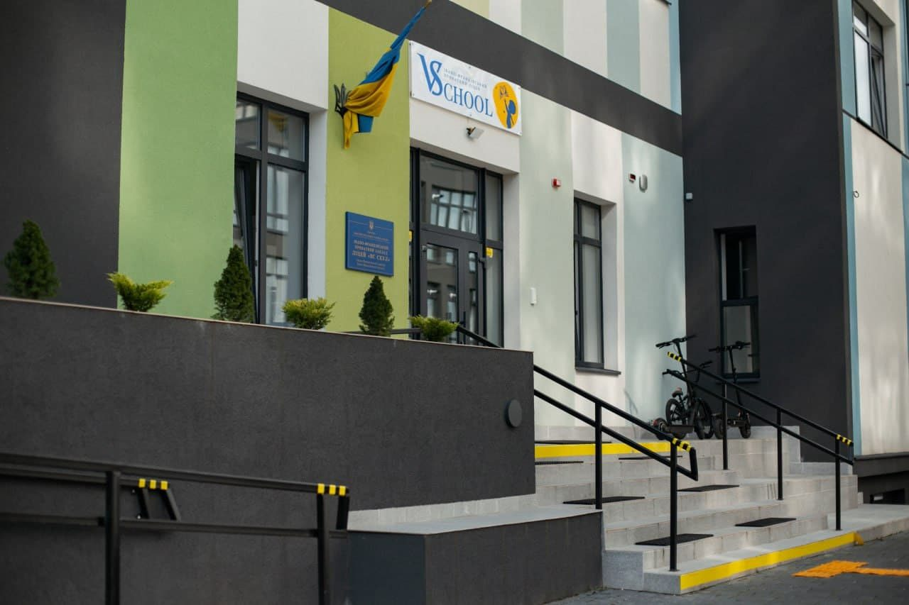

Документи
Прозорість та інформаційна відкритість закладу освіти: статут, ліцензія, освітні програми, звіти та правила.
Установчі документи
Освітній процес
- 5
- 8Відкрити
Мова освітнього процесу — українська (ст. 7 Закону України «Про освіту»)
- 10
Матеріально-технічне забезпечення (згідно з ліцензійними умовами)
ДетальнішеУ ліцеї функціонують 20 навчальних кабінетів, спортивна зала, комп’ютерний клас, актова зала, їдальня на 120 місць, приміщення для двох дошкільних груп і спортивний майданчик.
Для дошкільного підрозділу на території є ігровий майданчик, для учнів обладнано місця для занять на свіжому повітрі у внутрішньому дворі та на даху ліцею. Укриття обладнане відповідно до методичних рекомендацій ДСНС. У навчальних кабінетах є інтернет, у ліцеї — Wi‑Fi.
- 11інтерактивних дощок
- 22проєктори
- 10телевізорів
- 52ноутбуки
- 7принтерів
- 1ламінатор
- 11
Результати моніторингу якості освіти
Результати будуть опубліковані після проведення моніторингу.
- 12
Вступ і навчання
- 6
Територія обслуговування
За ІФПЗЛ «ВС СКУЛ» територія обслуговування не закріплена, тому ми приймаємо на навчання дітей незалежно від місця проживання.
- 7
Ліцензований обсяг і фактична кількість учнів
Ліцензований обсяг — 400 учнів. Станом на 01.01.2025 у закладі навчаються 265 здобувачів освіти.
- 9
Вакантні посади
Станом на 01.01.2025 вакантних посад немає.
- 13
Правила прийому до закладу освіти
Детальніше- Подача заявки. Заповніть заявку на сайті — адміністратор вам зателефонує.
- Зустріч з дитиною та батьками. Екскурсія ліцеєм з адміністрацією, співбесіда з дитиною.
- Пробний день. Безкоштовний пробний день у ліцеї, включно з харчуванням.
- Підписання договору. Ви підписуєте договір зі школою та подаєте документи для вступу.
- 14
Умови доступності для навчання осіб з особливими освітніми потребами
ДетальнішеВідповідно до Ліцензійних умов провадження освітньої діяльності (постанова Кабінету Міністрів України від 30 грудня 2015 року № 1187) будівлі та приміщення ІФПЗЛ «ВС СКУЛ» забезпечені безперешкодним доступом для дітей з інвалідністю та інших маломобільних груп населення згідно з державними будівельними нормами України.
- 15
Розмір плати за навчання
Плата за надання освітніх послуг у повному обсязі встановлюється в гривні за курсом долара США, встановленим Національним банком України (станом на 05.09.2024 — 400 у. о.).
- 16
Додаткові освітні та інші послуги
Усі послуги входять в оплату за навчання. Секції та студії — на вибір учня. Гуртки
Безпека та поведінка
- 17Відкрити
Правила поведінки здобувача освіти (Кодекс поведінки ліцеїста)
- 18Відкрити
План заходів із запобігання та протидії булінгу (цькуванню)
- 19Відкрити
Порядок подання та розгляду (з дотриманням конфіденційності) заяв про випадки булінгу (цькування)
- 20Відкрити
Створення комісії з розгляду випадків насильства та/або жорстокого поводження з дітьми та Положення про її роботу
- 21Відкрити
Проєкт «СТОП, БУЛІНГ»
- 22Відкрити
Наказ про мораторій на публічне використання російськомовного продукту на 2025–2026 навчальний рік
23Інша інформація оприлюднюється за рішенням закладу освіти або на вимогу законодавства — у цьому розділі та в новинах.